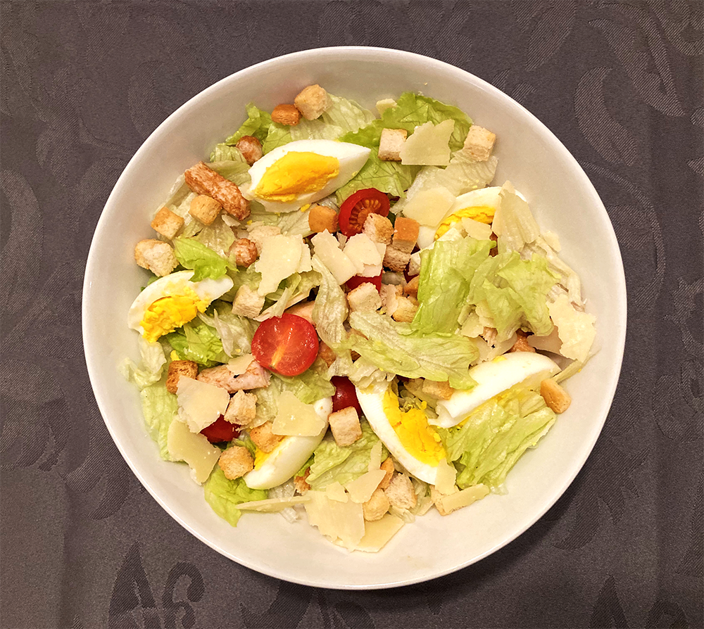

vietnamese pannenkoeken (banh xeo)
avocado salade

arabische falafel

macedonische shopska salade
sri lankaanse pompoen curry
chili sin carne met guacamole

indiase kofta curry
pannenkoek
crêpe met kiwi

black cherry kiss cocktail
citroen muntthee
spaanse paella
amerikaanse caesar salade
Vaak wordt deze salade gemaakt met ansjovisfilet maar in dit recept heb ik kip gebruikt! In plaats van croutons kun je ook stukjes geroosterd brood gebruiken.

Bereidingsduur: 25 minuten
Aantal personen: 2
Ingrediënten:
1 krop romanasla
60 gram parmezaanse kaas
3 handjes croutons
200 gram gerookte kipfilet
300 gram cherry tomaten
1 ei
10 druppels worcestersaus
½ stuk citroen
1 eetlepel mosterd
2 eetlepels mayonaise
naar smaak knoflookpoeder
naar smaak peper en zout
1 krop romanasla
60 gram parmezaanse kaas
3 handjes croutons
200 gram gerookte kipfilet
300 gram cherry tomaten
1 ei
10 druppels worcestersaus
½ stuk citroen
1 eetlepel mosterd
2 eetlepels mayonaise
naar smaak knoflookpoeder
naar smaak peper en zout
Instructies:
1. Kook het ei. Neem ondertussen de bladeren van de sla en snijd deze klein en doe in een grote saladekom.
2. Snijd de kipfilet in dunne plakjes en halveer. Voeg deze samen met de tomaatjes toe aan de kom.
3. Tijd voor de dressing. Meng de worcestersaus, het sap van de halve citroen, mosterd, mayonaise en een snufje van knoflookpoeder, peper en zout in een klein kommetje.
4. Snijd het ei in vieren en leg op de salade.
5. Strooi de croutons en kaas eroverheen. Serveer met de dressing.
1. Kook het ei. Neem ondertussen de bladeren van de sla en snijd deze klein en doe in een grote saladekom.
2. Snijd de kipfilet in dunne plakjes en halveer. Voeg deze samen met de tomaatjes toe aan de kom.
3. Tijd voor de dressing. Meng de worcestersaus, het sap van de halve citroen, mosterd, mayonaise en een snufje van knoflookpoeder, peper en zout in een klein kommetje.
4. Snijd het ei in vieren en leg op de salade.
5. Strooi de croutons en kaas eroverheen. Serveer met de dressing.